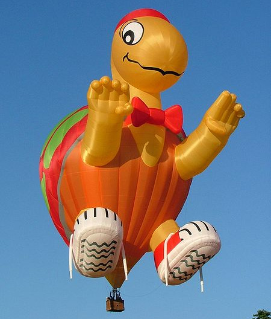
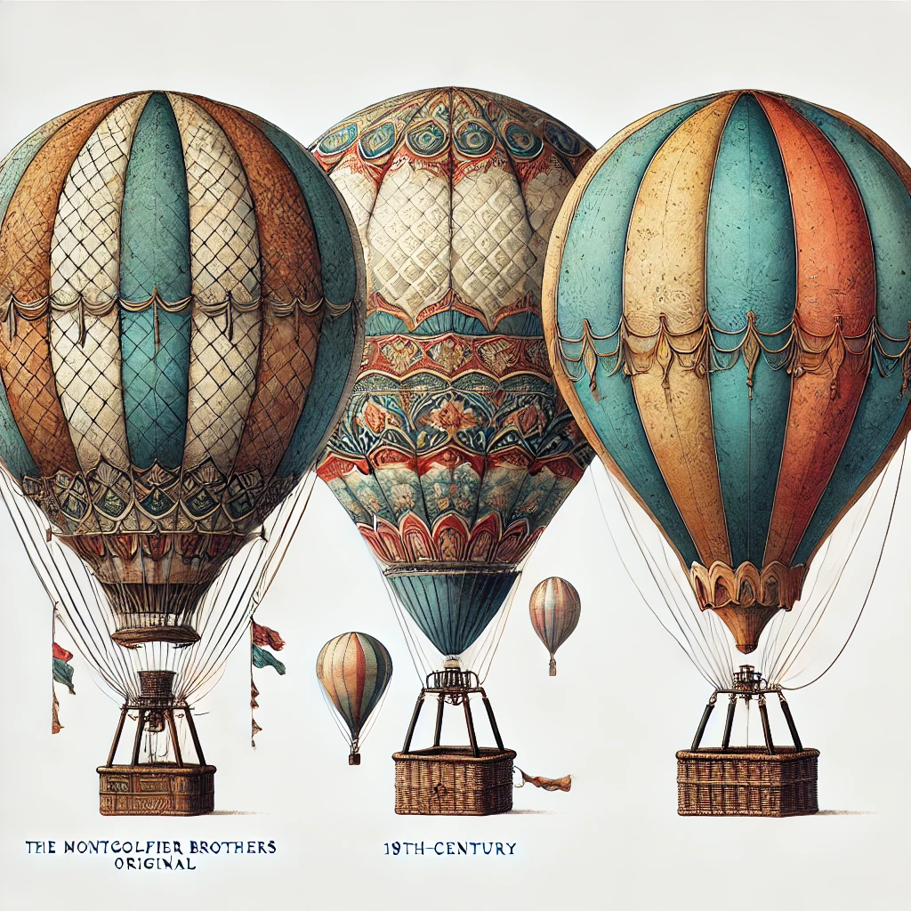

The History of Hot Air Balloons
by Mukhammmadziyo
The Invention of the Hot Air Balloon
- Hot air balloons were invented in the 18th century by French brothers Joseph-Michel Montgolfier and Jacques-Étienne Montgolfier.
- Their first successful unmanned flight took place on June 4, 1783, in Annonay, France, using a paper and fabric balloon.

First Ballon

Modern Ballon

Unusual Ballon
First Manned Flight
- The first human flight occurred on October 19, 1783.
- Jean-François Pilâtre de Rozier and François Laurent d'Arlandes flew over Paris for about 9 kilometers.
Development of Hot Air Balloons
- Early balloons relied on open flames for heating.
- Modern hot air balloons use propane burners and are made with lightweight, heat-resistant materials for safer and longer flights.

Structure of a Hot Air Balloon
- Envelope: The main balloon that holds the heated air.
- Basket (Gondola): Where passengers and the pilot stand.
- Burner: The device that heats the air inside the envelope.
Modern Uses
- Tourism: Popular in places like Cappadocia, Turkey, and the Maasai Mara, Kenya.
- Sports: Competitive ballooning events.
- Science: Atmospheric studies and aerial surveys.